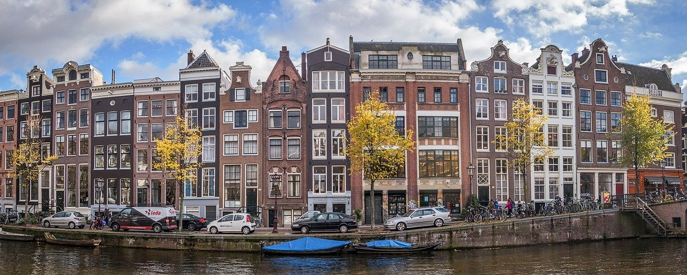

Historia de Amsterdam
En el siglo XII, la construcción de un dique (dam) sobre el río Amstel dió nombre al poblado allí asentado: Amsteldam. En 1358 formó parte de la Liga Hanseática y empezó a destacar como centro comercial en el norte de Europa. Carlos V de España heredó los Países Bajos de su abuela María, de la Casa Ducal de Borgoña. La dependencia de España y el descubrimiento del Nuevo Mundo abrieron nuevas oportunidades a Ámsterdam, que se convirtió, tras Lisboa, en el puerto más importante del mundo.Se especializó en el comercio de granos y de armamento y fue sede de la reventa de las especias procedentes de la India, tras abrir el rey de Portugal una delegación en la ciudad.
La Guerra de los Ochenta años
En 1578, Ámsterdam se unió a la guerra contra España. Las causas de la revuelta contra las tropas españolas del rey Felipe II fueron la lucha por la libertad religiosa, la defensa de los privilegios de las clases dominantes y el creciente nacionalismo; unido al malestar creado por la represión llevada a cabo por el Duque de Alba y por la imposición de nuevos impuestos como el Centésimo y la Alcabala.
El Primer siglo de Oro

El siglo XVII se considera el Primer Siglo de Oro de Ámsterdam. En esta época se construyó el Ayuntamiento de la Plaza de Dam y la ciudad fue residencia de intelectuales y artistas que, huyendo de las guerras que asolaban Europa, se refugiaron en la próspera ciudad: Rembrandt, Spinoza, Descartes.
Ámsterdam capital de los Países Bajos

En 1810 Napoleón invadió los Países Bajos y Ámsterdam se convirtió en su capital. La invasión afectó a su comercio que lo pagó muy caro por el bloqueo internacional. Tras la derrota de las tropas francesas, el Congreso de Viena de 1815, crea el nuevo Reino Unido de los Países Bajos, que incorporó a Bélgica y Luxemburgo. Ámsterdam se mantuvo como capital del nuevo país. En 1830, los belgas se rebelaron y lograron la independencia. Poco después, Luxemburgo haría lo mismo.